Dördüncü Vardiya · Kayıp Pay Madeni
Frostbay → yakın kıyı yamacındaki terk edilmiş ocak · 2–3 saat; iki kısa oturuma bölünebilir
Pazarda bir harita satıcısı eski madenci hazinesini gösterir. Aynı kırmızı leke başka bir müşterinin haritasında da vardır.
Üç oyuncu / 1. seviye. Zor ve isteğe bağlı zindan; bütün insan düşmanlarla aynı anda savaşmak ölümcül olabilir. Dinleme, baskın planı, muhafız ittifakı ve atölye çıkışı gerçek seçeneklerdir. Keşif ve kurtarma başarısı tam ödül sayılır.
Frostbay · Aynı leke
Satıcı haritayı iki parmağıyla düzlüyor. Köşesindeki kırmızı lekeye bakıp, “Eski ustanın kanı,” diyor. Tam o sırada arkanızdan geçen birinin elinde aynı kâğıdı görüyorsunuz. Aynı kıvrım. Aynı leke.
Yalnız DM: Satıcı Neris Tul, her harita için örgütten pay alan aracı. Adı Kör Terazi olan yerel çete, hazine arayanları soymak ve cevheri çıkarmaya zorlamak için kopyalar dağıtır. Başarılı ikna veya yakalama halinde Neris girişteki gözcü işaretini söyler; şiddet zorunlu değil.
Görsel: side-frostbay-market
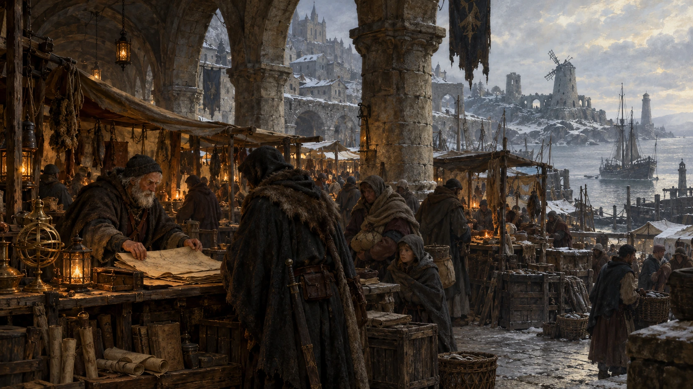
Araştırma DC 10 · İki leke aynı baskının parçası; bu eski tek nüsha değil.
Başarısızlık: Kopyayı fark edersin ama inceleme satıcının dikkatini çeker; seni uzaktan izlemeye birini yollar.
İçgörü DC 12 · Neris altını değil alıcının aletlerini ve güçlü kollarını inceliyor.
Başarısızlık: Niyetini okuyamazsın. Harita yine alınabilir; sorun bilgi kaybı değil güven meselesidir.
Neris: “Hazineyi ben taşıyabilsem burada kâğıt satmam.”
Alva Neris (akrabalık yok): “Kardeşim Siven de o kâğıttan aldı. Haritasını değil, kendisini geri istiyorum.”
Sonraki adım: Harita bedeli 2 gümüş; Alva kayıp kardeşinin yol tarifini ücretsiz verir. Ocağa yarım günlük kıyı yürüyüşüyle gidilir. Yer, atlas üstünde kesin koordinatı onaylanmamış bir alt mekândır; yeni şehir pini ekleme.
1 · Ocak ağzı
Eski rayın üzerindeki kar ezilmiş. Paslı araba sanki birileri biraz önce yolun kenarına itmiş gibi duruyor. Karanlığın içinden üç hafif vurma geliyor; sonra yukarıdaki taşların arasından tek bir cevap.
Yalnız DM: Merr gözlem yuvasından içeri işaret veriyor. Haritanın işaretlediği altın yığını yok. Yük izleri ve yukarıdaki görüş hattı zarsız fark edilir. Gözcüye gizlice yaklaşma, sesle anlaşma, geri dönüp yardım isteme mümkün.
Görsel: side-mine-entrance
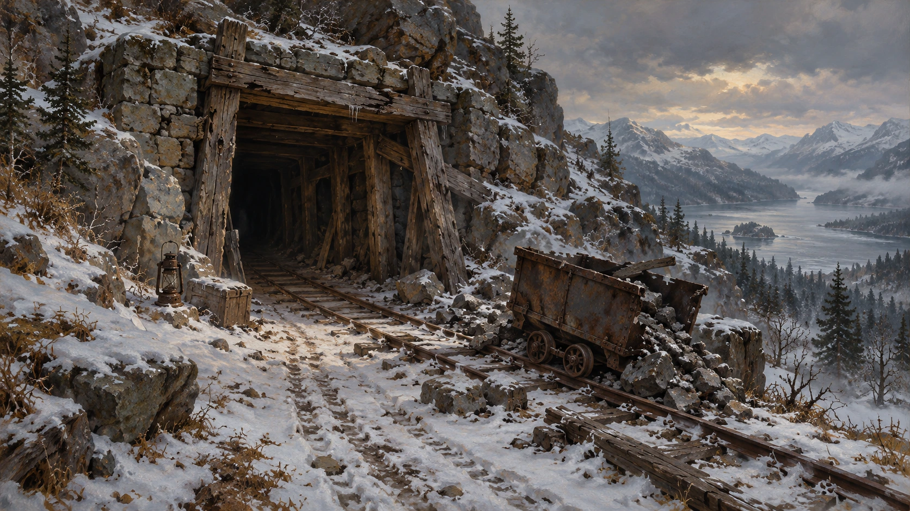
Algı DC 11 · Taş yuvasında dürbün değil küçük bir parlatılmış metal ayna bulursun; işaret içerideki Olt ve Fen’e gidiyor.
Başarısızlık: Aynayı seçemezsin ama üç vurmanın cevaplandığını duyarsın; pusuya dair uyarı korunur.
Gizlilik DC 12 · Merr görmeden bakım yarığına ulaşırsın.
Başarısızlık: Merr seni görür, kapıdaki çanı bir kez çalar. Düşmanlar hazırlanır; savaş otomatik başlamaz.
Sonraki adım: Bakım yarığı 5 numaraya dar bir dolanma yolu; ağır zırhlı da geçebilir ama 10 dakika sürer. Ana giriş 2 numaraya gider. Her gerçek 10 dakikalık keşif/arama için Keşif sayacını bir ilerlet.
2 · Pay sandıklığı
Duvara çizilmiş ok işareti cilalı bir sandığı gösteriyor. Sandığın çevresindeki tozun içinden yeni çizmelerin izleri geçiyor. Tavana yakın bir mazgalın altında üç tane yontulmuş çakıl üst üste konmuş.
Yalnız DM: Sandık yemdir. Arka ipi, düşen bir kapakla geri çekilişi daraltan düzeneğe bağlıdır; ölüm çukuru değil. Olt ve Fen gözcü işaretinde mazgal ve yan kapıya geçer. Daha önce etkisiz kaldılarsa burada yeniden doğmazlar.
Görsel: side-mine-hall
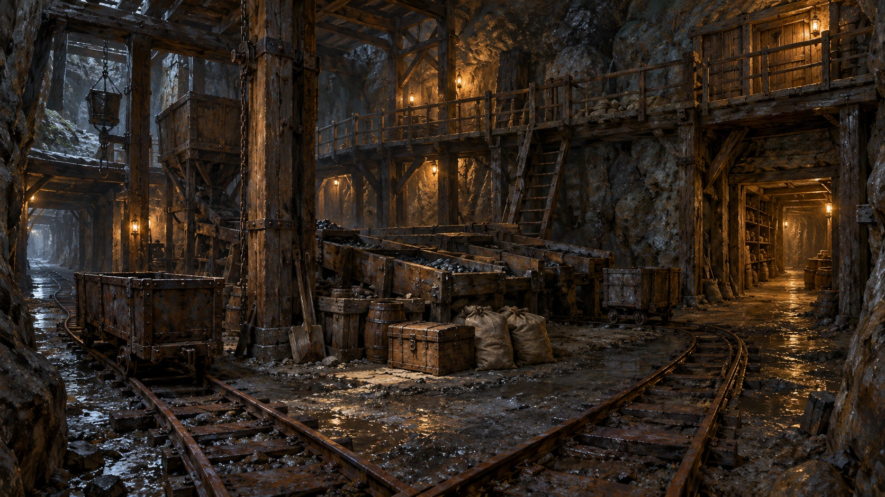
Araştırma DC 11 · İpi ve tek yönlü mandalı bulursun. Takoz veya ipi gevşetmek tuzağı zar gerektirmeden durdurur.
Başarısızlık: İpi geç fark edersin: kapak düşerken bir nesne bırakıp eşiği takozlayabilirsin; hasar zorunlu değil.
Algı DC 12 · Mazgal boşluğunda iki yetişkinin ağırlığıyla kıpırdayan tahta gıcırdıyor.
Başarısızlık: Nerede oldukları seçilmez, fakat içeride insan olduğu anlaşılır.
Bulmaca: Sandık açılınca hangi parça hareket edecek? Oyuncuya kapak, ip ve karşı ağırlığın görünür bağlantısını tarif et.
- İp sandığın arkasından kapak mandalına gidiyor.
- Kapak altında eski bir ahşap takoz yuvası var.
Çözüm: Kapağı önce takozlamak veya ipi gerginliği korunarak sabitlemek güvenli açılma sağlar.
İçeriğe yan tahtadan ulaşmak, kapağı dışarıdan çekmek veya yem sandığı hiç açmamak geçerlidir.
Tuzak kapanırsa 5 numaralı çıkış hâlâ kullanılabilir; Atletizm DC 12 ile kapak kaldırılabilir. İki kişi yardım ederse avantaj. Kapak birine çarparsa Çeviklik kurtarışı DC 10, başarısızlıkta 1d4 ezilme; kurtarışta hasar yok.
Sonraki adım: Oyuncuların seçtiği bağlantıya ilerle; yalnız okumak oyun zamanını ilerletmez.
3 · Yazı odası
Masanın üzerindeki hazine çizimi henüz kurumamış. Yanında adlar, boylar ve getirilen aletler sıralanmış. Bir satırın karşısında “iyi kazıcı” yazıyor. Bir diğerinin yanında yalnızca bir çizgi var.
Yalnız DM: Kanıt açık: haritalar burada çoğaltılıyor. Bren Volk geliri ve insanları paylaştırır. Masadaki belgeleri almak veya kopyalamak çözümü gizlemeyen temel bilgidir. Maden aracı freninin pimi 5 numarada, sağlam kayışı buradaki kilitsiz çekmecededir.
Görsel: side-mine-hall
Araştırma DC 12 · Frostbay’deki iki teslim noktası ile Neris’in satış gününü eşleştirirsin; sonraki macera için somut adres bilgisi doğar.
Başarısızlık: Listeyi alırsın ama şehir bağlantılarını hemen çözemiyorsun. Marhalden loncası sonradan okuyabilir.
El Çabukluğu veya Hırsız Aletleri DC 11 · Mürekkep kavanozu devrilmeden sessizce kanıtı toplarsın.
Başarısızlık: Kavanoz kırılır; bir keşif adımı geçer ve Bren sesin yerini anlar. Kanıt okunabilir kalır.
Bren: “Kâğıt onlara umut veriyor. Ben yalnız geleni çalıştırıyorum.”
Bren pazarlıkta: “Çıkış açık. Kâğıtları bırakın, kazancınız sizde kalsın.”
Sonraki adım: Bren burada veya alarmda pompa kapısında bulunur; iki yerde birden değil. Üçüncü keşif adımından sonra girişte üç muhafız sesi duyulur. Onların geldiğini oyunculara mutlaka duyur.
4 · Bekleme cebi
Parmaklık yerine kapıya dolanmış bir zincir var. İçerideki adam ayağa kalkmaya çalışıyor, sonra oturduğu yere geri çöküyor. “Haritayı siz de mi aldınız?” diye soruyor. Sesindeki utanç, açlığından daha ağır.
Yalnız DM: Siven ve iki isimsiz yetişkin yolcu burada tutuluyor. Çekilen dış sürgü zarsız açılır. Siven önce birini madenin yöneticisi sanabilir; serbest bırakılınca sırayla ipucu verir. Tutsaklar savaşçı değildir, kaçış yolunu gösterince geri çekilirler.
Görsel: side-mine-hall
Tıp DC 10 · Bir bez, su ve dinlenmeyle Siven’in ayağını desteklersin; kendi başına çıkabilir.
Başarısızlık: Bileği kötü; iki kişi yardım ederek çıkarabilir. Başarısızlık tutsak öldürmez.
İkna DC 11 · Siven patronun ve ustanın anlaşamadığını anlatır: Dessa başka bir kurban ölürse çekip gideceğini söylemiş.
Başarısızlık: Hemen güvenmez; kapıyı açıp çıkış yolunu güvene almak aynı bilgiyi kazandırır.
Siven: “Kaynayan suyu boşaltmadan o çarkı çevirmeyin. Ön kol… iki ölçü. Gerisini levhada yazmışlardı.”
Sonraki adım: Siven’in “ön kol iki ölçü” sözü isteğe bağlı güçlü ipucu. Tutsakların kurtarılması, cevheri çıkarmadan da tam macera başarısıdır.
5 · Bakımevi ve arka çıkış
Duvardaki eski iş çiziminde her vida yerli yerinde. Tezgâhın üzerinde gerçek fren piminin yerine çakılmış bir çivi var. Dışarıdan gelen ince hava, rafın arkasındaki paçavraları hareket ettiriyor.
Yalnız DM: Sağlam fren pimi kutuda; yanlış çivi hiçbir onarım kuralını bilmeksizin gözle ayırt edilir. Raf arkasındaki dar bakım yarığı dışarı çıkar ve 1 numaranın yanına iner. Kimseyi burada sıkışmaya zorlamaz. Bu bir Hardlane/Karlan dağ geçidi değildir.
Görsel: side-mine-rig
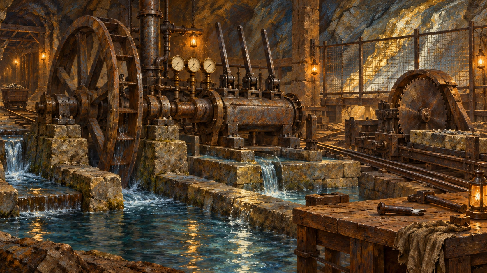
Demirci Aletleri veya Araştırma DC 11 · Pim üzerindeki aşınma yönünden doğru takılışını anlarsın; sonraki onarım sessiz yapılır.
Başarısızlık: Pimi yine takabilirsin; deneme ve düzeltme 10 dakika sürer. Uygun araç veya Dessa’nın yardımı bu zarı gereksiz kılar.
Hayatta Kalma DC 10 · Yarığın dışarıdaki izleri geriye dönmeden acil çekilme noktası belirlemeni sağlar.
Başarısızlık: Çıkış açık kalır ama dışarıyı kontrol etmek bir keşif adımı ister.
Sonraki adım: Fren pimi burada, kayış 3 numarada. Bir sarı yağdanlık, sıradan aletler ve içme suyu var. Kısa dinlenme, alarm yoksa burada mümkün; nöbetçiyi gerçekten ayarla.
6 · Basınç odası
Kalın borunun yanındaki kadın elini kaldırıyor. Avucunu size değil, çatlamış göstergeye çeviriyor. “Bir adım daha atarsanız ayağınızın altındaki döşemeyi değil,” diyor, “arkasındaki basıncı düşünün.”
Yalnız DM: Dessa Kurn bozuk aracı çalıştırabilen tek çete üyesi. Fren pimi ve kayış eksik, havalık tıkalı; devridaim sıcak ama patlayıcı değil. Dessa tutsakları kurtarıp Bren’i etkisiz bırakan ekibe yardım eder. Sırf maden için burada ölmeye istekli değildir. Bren’in masum işçi olduğu iddiasını doğrulamaz.
Görsel: side-mine-rig
İçgörü DC 11 · Dessa çıkışa bakıyor; sizi öldürmekten çok Bren’den ayrılmanın sonucunu düşünüyor.
Başarısızlık: Niyetini okuyamazsın. Yine de ona güvenli ayrılma teklif edebilirsin.
Araştırma DC 12 · Üç gösterge üç farklı hattı ölçüyor. Toplam, kaldıraç ve dönüş borusu okunabilir; şifreli dil yok.
Başarısızlık: İlişkiyi hemen çıkaramazsın; boruları elle izleyip 10 dakika harcayarak aynı açıklamaya ulaşırsın.
Bulmaca: Makineyi önce onar: sağlam fren pimini tak, kayışı değiştir, havalığı aç. Ardından A/B/C yuvalarına 1, 2, 3, 5, 8 ölçülük beş plakadan üç farklısını yerleştir.
- TOPLAM göstergesi A+B+C için 10 ister.
- KALDIRAÇ göstergesi ön kolu iki kez sayar: 2A+B için 7 ister.
- DÖNÜŞ göstergesi B+C için 8 ister.
- Duvar çiziminde ön kol A, orta kol B, arka kol C açıkça gösterilmiştir.
Çözüm: A=2, B=3, C=5. Toplam ve Dönüş farkından A=2; kaldıraçtan B=3; dönüşten C=5. Plakalar fiziksel ve tektir, aynı plaka iki yuvada kullanılamaz.
Dessa veya kurtarılan Siven bir ilişkiyi açıklayabilir. Ham Kuvvet kristali kırar ve sadece sıradan taş verir; ama bütün macera ve tutsak kurtarma yine tamamlanabilir. Doğru mantığı bulan oyuncudan ek Zekâ zarı isteme.
Yanlış basınçta fren sistemi bırakmaz; kırmızı değil sarı uyarı duyulur. Üç yanlış deneme havalığı yeniden temizlemeyi gerektirir (bezle 1 dakika, zar yok). Hata anında cevheri yok etme, çatışmayı otomatik başlatma veya hasar verme.
Sonraki adım: Oyuncuların seçtiği bağlantıya ilerle; yalnız okumak oyun zamanını ilerletmez.
7 · Soluköz damarı
Siyah kayanın içinde sedef rengi ince halkalar var. Bir lambayı yaklaştırınca parlamıyorlar; ışığı yutmuş gibi matlaşıyorlar. Ortada, taşın içine kapanmış tek bir soluk duruyor sanki.
Yalnız DM: Makine soğuk su altında titreşimsiz kesim yaparak tek sağlam çekirdeği çıkarır. Görünen diğer halkalar boşalmış kabuklardır. Tekrar düğmeye basmak yeni çekirdek üretmez. İşletme kapısı ancak araç güvenli ayardayken açılır; taş duvarı aşmak mümkünse de hassas çıkarım için araç hâlâ gerekir.
Görsel: side-solukoz
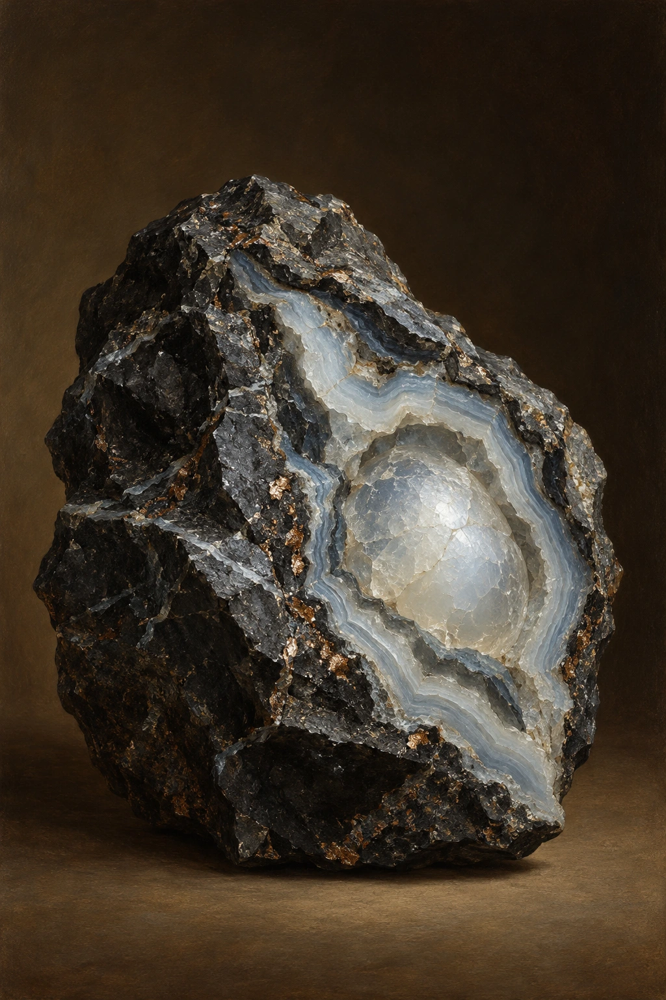
Doğa veya Büyü Bilgisi DC 12 · Bu Veyralt değil; Soluköz adlı nadir cevher. Ham örnek ile ritüel için işlenmiş çekirdek arasındaki farkı bilirsin.
Başarısızlık: Cevher değerli görünür ama işlevi kesinleşmez. Marhalden loncasının yazılı incelemesi aynı bilgiyi ücretsiz doğrular.
Algı DC 10 · İnce yandan verilen ışık, boş kabukların içindeki kurumuş damarları gösterir.
Başarısızlık: İlk örnek çıktıktan sonra makinenin göstergesi sıfıra iner; başka sağlam çekirdek olmadığı anlaşılır.
Sonraki adım: Bir Soluköz ham çekirdeği, tutsaklara ait ayrılmış eşyalar ve Bren’in kendi donanım sandığından üç maceracı için en fazla üç sıra ödül. Önceki kurbanların paraları ortak ganimet sayılmaz; bulunan listeyle sahipleri aranabilir.
Evde Üç Kişi Var
Harven yolu · eski oduncu patikası · 40–60 dakika
Tipi öncesi tek bacası tüten bir evde bir yaşlı adam ve iki korkmuş çocuk görülür.
Çocuklara karşı cinsel şiddet veya ayrıntılı zarar tasviri yok. Saklanan bedensel kalıntılar yetişkin kaçakçıya aittir; çocuklara değil. Orvek’in iyi bir iş yapması onu bütünüyle masum kılmaz.
1 · Kapının eşiği
Adam önce yüzünüze değil ellerinize bakıyor. Çenesinin bir yanı daha geniş. Arkasında iki çocuk oturuyor. Büyüğü küçüğünün bileğini tutuyor. “İçeri girerseniz,” diyor adam, “önce silahlar kapının yanında.”
Yalnız DM: Orvek insanla aynı görünmeyen yaşlı bir münzevi. Lena (11) ve Tavi (7) kaçırıldıkları arabadan kaçmıştır; onları saklar. Çocuklar hem onun ne yaptığından hem geri götürülmekten korkar. Kökeni veya fantastik türü henüz sabitlenmedi.
Görsel: side-orvek-house
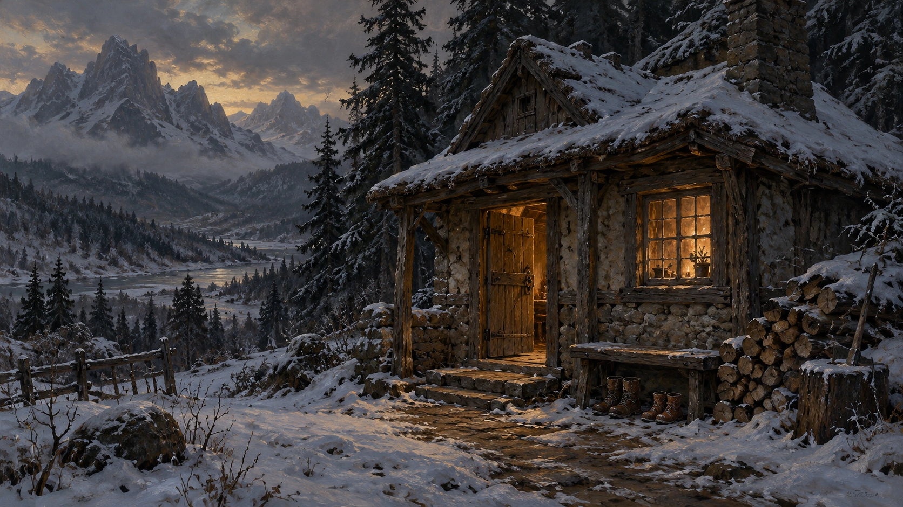
Tıp DC 10 · Bileklerdeki izler eski bağ izleri; yeni temiz bezler yaraları koruyor.
Başarısızlık: İzin yaşını belirleyemezsin, ama çocuklara yardım etmek için zar gerekmez.
İçgörü DC 11 · “Bizden önce kim geldi?” sorusunda Orvek’in cevabı değişiyor.
Başarısızlık: Zihnini okuyamazsın. Soru sormaya ve çevreye bakmaya devam edebilirsin.
Orvek: “Onları benden koruyabilirsiniz. Önce onları kimin aradığını öğrenin.”
Lena: “O adamın arabasına binmeyeceğiz.”
Sonraki adım: Silahı indirip uzakta oturmak, su vermek, çocuğun hayır demesine izin vermek güven sağlar. Temel tanıklık için İkna zarı şart koşma.
2 · Döşemenin altı
Döşemede tek bir tahta diğerlerinden daha temiz. Altında bağlanmış küçük bir kese var. Adam onu gördüğünüzde yaklaşmıyor. Yalnız, “Çocukların değil,” diyor.
Yalnız DM: Kesede yetişkin giysisi, pirinç düğme, üç çentikli yük mührü ve yetişkine ait kalıntılar bulunur. Orvek gelen kaçakçıyı öldürmüş ve ondan beslenmiştir; gerçeği itiraf edebilir. Ayrıntılı beden betimi gerekmez. Çocukların tanıklığı zorlamayla alınmaz.
Görsel: side-orvek-house
Araştırma DC 12 · Mühür taze; giysi aynı kişinin kaba yükçü ceketiyle uyuşuyor.
Başarısızlık: Aidiyet hemen kesinleşmez; Orvek’in açıklaması ve çocukların tanıklığı karşılaştırılabilir.
Sonraki adım: Lena arabanın katran kokusunu, her teker dönüşünde metal tıkırtısını ve “sağ arka yine açıldı” sözünü hatırlar.
3 · Üç araba
Yol ayrımında üç araba durmuş. Birinde odun, birinde balık fıçıları, sonuncusunda bez balyaları var. Evdeki çocukları arayan adam, siz daha bir şey söylemeden “Dayılarıyım,” diyor.
Yalnız DM: Çocukları arayan iki kaçakçı gelir. İddia kanıt değildir. Biri kapıyı tutmaya, öteki arabaya dönüp haber vermeye çalışır. İki çocuk da korunabilir; burada zorunlu kurban seçimi yok.
Görsel: side-orvek-house
Hayatta Kalma DC 11 · Bez arabasının yolunu hızlıca izlersin.
Başarısızlık: Yol ayrımına gidip bakmak zaman ister; iz tamamen kaybolmaz.
Bulmaca: Lena’nın üç hatırasını üç araba ile karşılaştır.
- Odun arabası: katranlı örtü; bütün tekerler sağlam.
- Balık arabası: metal kaplar tıkırdar; sol ön teker onarılmış.
- Bez arabası: katranlı dingil; sağ arka tekerin demir çemberi gevşek.
Çözüm: Üç ipucunun hepsi yalnız bez arabasına uyar. Çocukların üç hatırasını zarsız ver; arabalara bakmak da bunları açığa çıkarır.
Kaçakçıyı izlemek, sorularındaki çelişkileri bulmak, çocukların istemediği kişiye teslim etmemek de geçerli. Bulmaca güvenliği erteleten zorunlu bir kapı değildir.
Tek ipucuyla yanlış kişiyi suçlamak tartışma ve zaman kaybı yaratır; masum arabacıyı otomatik suçlu yapma.
Sonraki adım: Çocukları Harven’de güvenilir bir haneye veya muhafız aracılığıyla bakım alabilecekleri yere ulaştır. Orvek’in yargılanması, bırakılması veya kaçması ayrı karardır; bedelsiz doğru cevap yoktur.
Suyu Olmayan Değirmen
Kemiğe Basan Yol yakınında, konumu henüz haritada sabitlenmemiş bir yan patika · 30–45 dakika
Kanalı kuru değirmenden gece öğütme sesi gelir; kapıda dört parmaklı unlu bir el izi vardır.
Düşman tek küçük hayvan; doğaüstü izlenim gerçek bir canavar ordusu anlamına gelmez.
1 · Unlu eşik
Çark kımıldamıyor. Kanalın dibinde ot çıkmış. Yine de içeriden düzenli bir sürtünme geliyor. Kapı önündeki unun üzerinde dört parmaklı bir el izi var; kapıya doğru değil, dışarıya sürüklenmiş.
Yalnız DM: Değirmenci Meraç Venn bir parmağını yıllar önce kaybetti. Yaralanıp alt kata çekilmiş. Sistemi içeriden oynatan bir Kiler Sıyırıcısı, kayışı yuvasına çekiyor. Dış çarkın bağlantısının kesik olduğu zarsız görülür.
Görsel: side-dry-mill
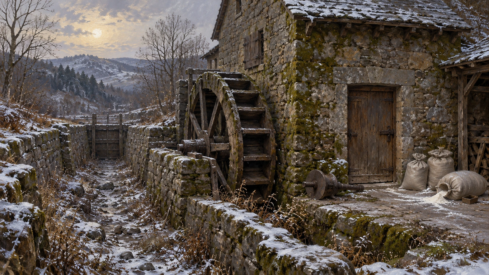
Doğa DC 10 · Un içindeki küçük ayaklar duvar diplerini izleyen bir hayvana ait.
Başarısızlık: Türü seçemezsin; izler bir insan sürüsüne ait görünmüyor.
Algı DC 12 · Alt kattaki insan vurması ile kayışın sürtünmesini ayırırsın.
Başarısızlık: Bir süre durup seslenince Meraç cevap verir; varlığını saklama.
Sonraki adım: Oyuncuların seçtiği bağlantıya ilerle; yalnız okumak oyun zamanını ilerletmez.
2 · İki yüzlük yük
Platformun demir mandalı eğilmiş değil. Yanındaki gösterge tam iki yüzü işaretliyor. Eski usta, kabartma bir resim çizmiş: üç çuval içeri, biri dışarı.
Yalnız DM: Yük dengelenmeden mekanik mandal açılmaz. Bir boş çuval dengeden çıkmıştır. Sayı bilmiyorlarsa çuvalların üzerindeki basit ölçü çizgileri sayılabilir.
Görsel: side-dry-mill
Bulmaca: Etiketleri 40, 60, 80 ve 100 libre olan dört çuvaldan hangi üçünü platforma koyarsınız?
- Karşı ağırlık 200 libre.
- Levha: “İnsan taşıma. Yükü dengele.”
- Eski çizimde üç çuval platformda, biri dışarıda.
Çözüm: 40+60+100=200; 80 dışarıda kalır. Doğru yükle mandal açılır; ek Zekâ zarı isteme.
Kendi ağırlıkları, sağlam ip, onarılmış merdiven veya makarayı başka yoldan sabitlemek geçerlidir.
Yanlış ağırlıkta mandal açılmaz. Platform düşmez. Zorlayıp kırmaya kalkarlarsa önce tehlikeyi açıkça anlat.
Sonraki adım: Merdivenin kırık kısmı onarılabilir; asansör bir insanı zorunlu olarak taşımak için yapılmamıştır.
3 · Kimin tahılı?
Çuvalların arkasından önce kuru bir hırıltı geliyor. Ardından bir adamın sesi: “Üstüne gitmeyin. Ben de öyle yaptım.”
Yalnız DM: Kiler Sıyırıcısı yuvasını koruyor; insan avlamaz. Meraç kapanışta alacaklılardan sakladığı tahılı burada tutar. Birini kurtarmak onun bütün alacak iddialarını doğrulamaz.
Görsel: side-dry-mill
Hayvan İdaresi DC 11 · Açık kaçış yoluna tahıl dökerek hayvanı yönlendirirsin.
Başarısızlık: Hayvan geri çekilmez ama uyarı verir; başka bir yol denemeye bir anınız var.
Araştırma DC 10 · Bazı çuvalların yeni tarihli ve başka sahipli olduğunu görürsün.
Başarısızlık: Meraç kendisi söylerse kayıtla karşılaştırabilirsin; zorunlu suçlu okuma zarı yok.
Meraç: “Değirmen durunca alacağım da durdu dediler. Çuvallar durmadı.”
Sonraki adım: Meraç 12 altın veya eşdeğer erzak/onarım hizmeti verebilir. Hayvanı öldürmeden çıkarmak tam başarıdır.
Harven Yolu · Üç Sessiz İşaret
Marhalden’in batı çıkışı → Harven’e inen orman patikası → Çatalocak mezrası · 90–120 dakika; iki kısa savaş, isteğe bağlı üçüncü çatışma
Son İlaç’tan sonra Sela’nın sevk yükü Harven’e gidiyor. Parti, yüklü arabayı geniş patikadaki korunaklı durakta sürücünün gözetiminde bırakıp iki katırı ve dört erzak torbasını Bera’nın fırınına ulaştıracak son yürüyüşe eşlik eder. Sena’nın durumu önceki karardan neyse öyle kalır.
3 oyuncu / 1. seviye. Bu bölüm Son İlaç’tan hemen sonra oynanabilir; köprü macerasının yerine seçilebilir veya köprüden sonra Harven’e yaklaşırken eklenebilir. Aynı köprü olayını zorunlu tekrar ettirme. İki kısa çatışma var; üçüncüsü yalnız hırsızları yakalayıp çatışmayı seçerlerse. Düşmanları topluca getirme. Her sahnede geri çekilme veya başka çözüm gerçek seçenektir. Bütün düşman canları mevcut grup için hafif masa taslağıdır.
1 · Üç yol, bir işaret
Taş yol ormanın içinde üçe ayrılıyor. Soldaki gövdeye yeni bir ok boyanmış. Ortadaki dar patikanın yanında üst üste üç yassı taş var; sağdaki yol ise suya doğru iniyor. Katırlardan biri sol yoldaki toprağı koklayıp duruyor.
Sela katırın ipini gevşetiyor. “Bera’nın taşıyıcısı üç taş demişti. Ama şu boya daha yeni.” Ağaçların arasında bir dal kırılıyor; ardından her şey yeniden sessizleşiyor.
Yalnız DM: Gerçek Harven patikası ORTA yol. Sol yol, Len ve Rusk adlı iki yetişkin soyguncunun kurduğu yem; sağ yol su kıyısına çıkar ve yirmi dakikada geri dönülebilir. Zar olmadan görülen bilgiler: üç taşta eski yosun var, soldaki boya hâlâ ıslak, sağdaki toprakta yalnız hayvan izi var. Oyuncular bunları birleştirirse doğru yol için ek zar isteme. Orta yol pusuyu arka tarafından görmeyi sağlar; pusu kendiliğinden silinmez, iki adamın saklandığı yeri fark ederek geçebilirler. Yeni bir Karlan geçidi veya tamamlanmış Kral Yolu değildir.
Görsel: road-forest-ambush
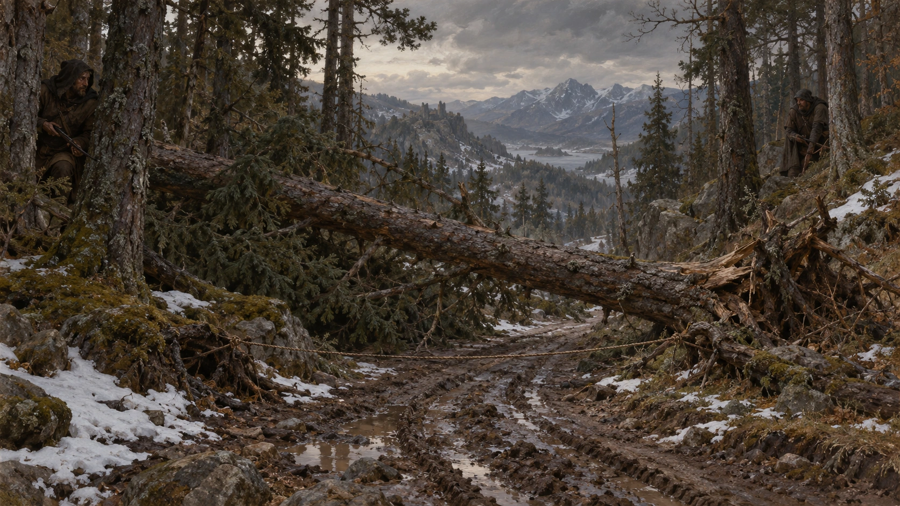
Hayatta Kalma DC 10 · Eski katır izleri ortadaki taş işaretine gider.
Başarısızlık: Yolu kesinleştiremezsin; boya ve yosun bilgisi yine görünür. Sela’nın tarifini kullanabilirsin.
Bulmaca: Taşıyıcının tarifi: “Yaşlı taşlara güven; taze işarete değil.” Hangi yol?
- Ortadaki üç taşın birbirine bakan yüzlerinde eski yosun bulunur.
- Soldaki boya parmağa bulaşır; işaret bugün yapılmıştır.
- Sağ yolda tekerlek veya yük katırı izi yok.
Çözüm: Orta patika. Doğru gerekçe veren oyuncuya tekrar zar attırma.
Sağdaki su yolundan dönmek veya izleri takip etmek de mümkün. Yanlış yol anında hasar vermez.
Sol patika 2. sahnedeki engelin önüne çıkar. Orta patika engelin yanını görür; soyguncular fark edilmeden bypass edilebilir.
Sela: “Yol kayboldu diye yükü de kaybetmek zorunda değiliz. Biraz bakalım.”
Sonraki adım: Orta yol seçildiyse 2. sahneye yandan, sol seçildiyse önden gir. Sağ yol yalnız zaman kaybettirir; sonra aynı kavşağa dön.
2 · Devrilen çam
Çam gövdesi yolu boydan boya kapatmış. Kesik yüzünden taze reçine akıyor. Köklerin arasında, ayak bileği yüksekliğinde bir ip seçiliyor.
Ağacın ötesinden bir adam çıkıyor. Elinde kısa bir sopa var; bakışı silahlarınızdan katırdaki erzak torbalarına kayıyor. “İki torba bırakın,” diyor. “Bu akşam başka dert aramıyoruz.” Daha gerideki ikinci adam, katırın bağını çözebileceği bir yer arıyor.
Yalnız DM: Len ve Rusk aç yol soyguncularıdır; şehir muhafızı değiller. Tuzak uyarısı herkes için görünür, sürpriz tur dayatma. İpi kesmek veya üzerinden kontrollü geçmek zar istemez. Orta patikadan gelen parti adamları önce görür; saklanıp geçebilir, seslenebilir veya onları yakalayabilir. İki torba verilirse gerçekten çekilirler. Kavga olursa Len tek saldırı yapar; Rusk ilk iki tur yalnız bir torbayı alıp kaçmaya çalışır. Rusk bir tur hem çalamaz hem saldıramaz. Len 3 cana inerse veya Rusk düşerse ikisi de kaçar/teslim olur. Peşlerinden savaşı uzatma.
Görsel: road-forest-ambush
İkna DC 11 · Bir günlük yiyecek ve küçük bir işle barışçıl anlaşırlar.
Başarısızlık: İki torbada ısrar ederler; kötü zar otomatik saldırı değildir.
Gizlenme DC 11 · Katırları yan patikadan geçirip çatışmadan kaçınırsınız.
Başarısızlık: Len sesinizi duyar ve konuşur; doğrudan hasar verilmez.
Len: “Kılıcını istemiyorum. Katırını da. Yiyecek bırak, yeter.”
Rusk, Len yaralanınca: “Bitti Len. Bu kadarına değmez.”
Sonraki adım: Yükten gerçekten kaybolan torbaları yaz. Düşmanlar etkisizse torbalar geri alınır. Eski taşıyıcı cebinde bir normal iyileştirme iksiri vardır (2d4+2); alınmışsa gruba tek adet ver. Sonra korunaklı dinlenme yerine geç.
3 · Köklerin altındaki açlık
Taşıyıcı kulübesinin çatısı yarı çökmüş ama arka duvarı rüzgârı kesiyor. Ocağın yanında kuru odun ve eski bir su kabı var. Patikanın kenarında açılmış bir erzak torbası duruyor; kumaşı bıçakla değil, iri dişlerle yırtılmış.
Yakın köklerin altından ağır bir soluk geliyor. Koyu kürklü, porsuk büyüklüğünde bir hayvan burnunu dışarı uzatıyor. Kısa alt dişleri çamura bulanmış. Size değil, yiyecek torbasına bakıyor.
Yalnız DM: Tek bir Kökdiş var. Aç bir leşçil; bölgeyi ele geçiren büyük boss değil. Önce torbayı çekiştirir, oyuncuya tepki fırsatı ver. Bir günlük yiyecek köklerden uzağa atılırsa onu alır ve gider; öldürmek şart değildir. Ateşli meşale ile mesafe korunması veya sakin geri çekilme mümkündür. Saldırıya uğrarsa 1 turda 1 kez 1d4 hasar yapar, zehir/grapple/çoklu saldırı yok. 3 cana indiğinde yiyeceği bırakıp kaçar. Kulübenin kapısından içeri giremez; geri çekilme gerçek çözümdür. Sonra bir saatlik kısa dinlenmeye izin ver, can zarlarını kullandır. İlk pusu çok zarar verdiyse yaratığı bu sahnede yalnız yiyecek kapıp kaçan bir tehlike olarak oynat.
Görsel: road-root-maw
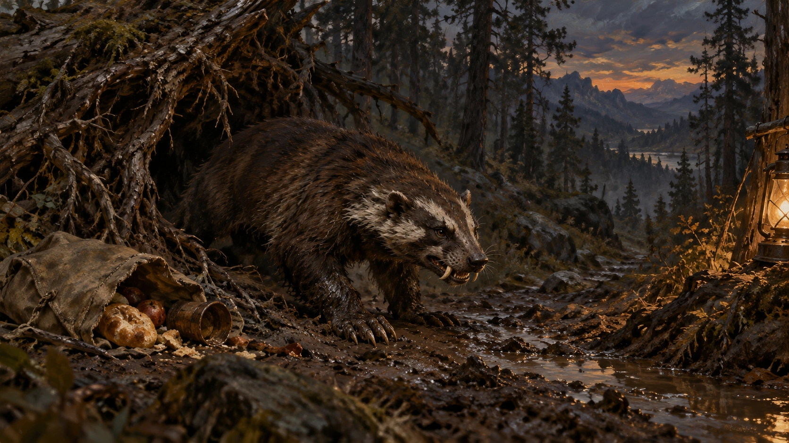
Doğa DC 10 · Canlıdan çok yiyeceğe yönelen aç bir leşçil olduğunu anlarsın.
Başarısızlık: Adını bilemezsin ama torbaya baktığı açık; oyuncu davranışla çözebilir.
Hayvanlarla İletişim DC 11 · Yiyeceği bırakırken hayvanı güvenli mesafede tutarsın.
Başarısızlık: Yiyeceğe bir adım yaklaşır; saldırı otomatik değildir. İçeri çekilebilir veya torbayı bırakabilirsin.
Sela: “Torbayı alsın. İçeride biz varız, dışarıda yiyecek.”
Sonraki adım: Tehlike geçince güvenli bir kısa dinlenme yapabilirler. İksir ve can zarlarını hatırlat. Harven’e yürüyüşte aynı hayvan yeniden doğmaz. Gün batımında Çatalocak’a ulaş.
4 · Çatalocak’ın sıcak tası
Üç evin arasındaki çamurda odun izleri var. Sundurmanın altında bir kadın taslara çorba dolduruyor. “Harven yarın da yerinde durur,” diyor. “İçiniz ısınsın, sonra isterseniz gidersiniz.”
Adının Nara olduğunu söylüyor. Genç bir adam kuru odun taşırken yük bağlarınıza bakıyor. Bir evin eşiğindeki başka kadın, elindeki iğneyi bırakmadan, “Misafirin bohçasını izinsiz taşımayın,” diye sesleniyor. Odun taşıyan adam gülümsüyor; cevap vermiyor.
Yalnız DM: Nara Vesk ve yetişkin kardeşi Edis, yolcuların küçük eşyalarını çalan fırsatçılardır. Üç evin bütün halkı suçlu değildir. İğneyle çalışan Mera Siv dürüst bir köylüdür; uyarısı gerçek ipucu. Çorba normaldir, uyku ilacı veya zehir yok. Nara’nın şalı altında deri yolcu kemeri, Edis’in bileğinde orman pususundakiyle aynı kırmızı düğüm ipi vardır. Bu bir büyük örgüt değil; Len/Rusk ile ara sıra çalıntı mal değiş tokuş ederler. Düşen ip, yükleri taşımaya gereğinden fazla heves ve Mera’nın uyarısı zarsız görülebilir. Nara’ya güvenmek tek başına otomatik kayıp doğurmaz.
Görsel: road-yalin-hamlet
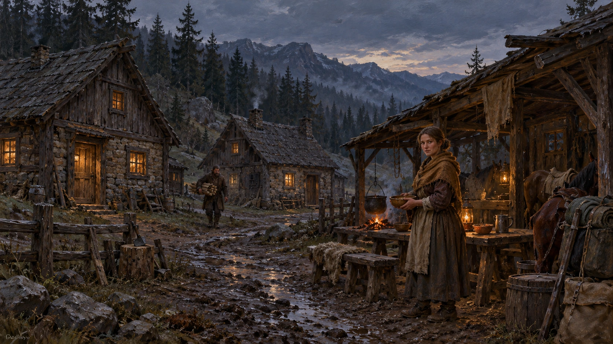
Sezgi DC 11 · Nara geceleme ücretinden çok nöbet tutup tutmayacağınızı öğrenmeye çalışıyor.
Başarısızlık: Samimiyetini okuyamazsın; yükleri kendi yanında tutabilir, Mera’ya sorabilirsin.
Araştırma DC 10 · Edis’in tuttuğu bağ yeni kesilmiş; sundurmada başka bir yolcunun adını taşıyan kese var.
Başarısızlık: Keseyi açmadan adını okuyamazsın. Mera konuşmayı ve örneği göstermeyi teklif eder.
Nara: “Çantaları ben kuru yere aldırırım. Siz dinlenin.”
Mera: “Kuru yer arıyorsanız benim kapının önü de kuru.”
Edis: “Bağını sıkıyordum sadece. Yük yolda açılmasın.”
Sonraki adım: Oyuncular nerede yatacaklarını, eşyalarını nerede tutacaklarını ve nöbeti söylesin. Burada kalmak zorunlu değil; ayrılırlarsa 6. adıma git, gizli ceza veya takip saldırısı ekleme.
5 · Kesenin düğümü
Ocaktaki son odun içeri çöküyor. Evlerden biri kararıyor. Sığınak tarafında yere bastırılmış bir tahta yavaşça esniyor; ardından kumaşın taşta sürtünmesine benzeyen bir ses geliyor.
Katır kulağını sese çeviriyor. Eşyalarınızın durduğu tarafta bir gölge duruyor. Gece henüz bitmedi.
Yalnız DM: Bu okuma yalnız hırsız gerçekten yaklaşıyorsa kullanılır. Eşyalar başında nöbet, bağlı çantaya çan, içeriden kilit veya Mera’nın evinde güvenli saklama planı varsa önce onu uygula; güveni cezalandırmak için sihirli hırsız üretme. Edis’in Gizlenmesi +3: nöbetçinin pasif Algısı veya etkin Algı kontrolüyle bir kez karşılaştır. Başarısızsa nöbetçi onu elini uzatmadan görür. Fark edilmezse en fazla 5 gümüş (varsa) ve iki günlük kumanya (varsa) alır; silah, zırh, karakter hikâye eşyası veya bütün envanter gitmez. Kayıp özel notta kaydedilir, uygulama oyuncu envanterini otomatik değiştirmez. Çalınanlar mezra dışındaki odun örtüsünün altında; ip iziyle sabah zarsız bulunabilir. Gece yakalanırsa Edis kaçmaya çalışır; Nara savunmaya gelir. İkisi yalnız kaçışları kesilip çatışma seçilirse savaşır. Edis ilk tur kaçış/soyulan torbayı bırakma işi yapar, saldırmaz; Nara turda tek 1d4 sopayla saldırır. Birinin canı 2’ye inerse teslim. Öldürmek veya uzun takip şart değil. Gece kısa olay, sekiz saatlik uzun dinlenmeyi otomatik iptal etmez; gerçek dinlenme kurallarını uygula.
Görsel: road-yalin-hamlet
Gözdağı veya İkna DC 11 · Çaldıklarını gösterir, odun örtüsünün yerini söylerler.
Başarısızlık: İnkâr ederler; kesik ip ve başka yolcunun kesesi gibi somut kanıtlar hâlâ vardır. Savaş zorunlu değil.
Edis yakalanınca: “Aldım. Bırakacağım. Katıra dokunmadım.”
Nara: “Mera’yı karıştırmayın. O bizi uyardı zaten.”
Mera: “Eşyalarını benim kapının önüne koyun. Sabah kimin ne aldığını konuşuruz.”
Sonraki adım: Çalınanları geri alma, serbest bırakma, Mera’ya devretme veya Harven’de şikâyet etme kararını yaz. Uzun dinlenmeyi bitirebilirler; sabah 6. adıma geç.
6 · Fırının dumanı
Sabah sisinin arasından ilk olarak bir baca görünüyor. Sonra taze ekmek kokusu geliyor. Harven’in ilk evlerine vardığınızda Sela torbaları sayıyor; birini omzuna alıp fırının önüne bırakıyor.
Kapıdaki kadın unlu ellerini önlüğüne siliyor. “Bera,” diyor. “Sizden önce yolun haberi geldi. Şimdi ne getirdiğinize bakalım.”
Yalnız DM: Bera önceki ana kampanyadaki aynı fırıncıdır. Bu bölüm ana Aç Çocuk görevine bağlanabilir. Gerçekten kaybolan veya geri alınan erzağı say; oyuncular iyi planla hepsini koruduysa başarıyı kabul et. Nara/Edis’in eylemleri bütün köyü kötü yapmaz. Mera gerçek yardımcı olarak kalır. Oyuncular şikâyet ederse isimleri, kanıtı ve olay yeri bilgisi verilir; muhafızın anında her sorunu çözmesini varsayma. Ödül olarak teslim edilen yük için sözleşmedeki normal ücret ve Bera’dan kişi başı iki günlük ekmek; çifte ücret yaratma. Yeni sihirli silah verilmez.
Görsel: road-yalin-hamlet
Bera: “Yük eksikse eksik deriz. Yolda kimi aç bırakmadığınızı da anlatırsınız.”
Sonraki adım: Bölüm bitti. Aç Çocuk görevini buradan aç veya Harven’de serbest oyun yap. Köprü bölümünü atladıysanız köprüde bir karar verilmiş gibi kayıt oluşturma.
Muhafızlar
Üç gerçek keşif adımı (her biri yaklaşık 10 dakika) tamamlanınca veya oyuncular dışarıdaki izcinin düdüğüne cevap verince üç muhafız girişe ulaşır. Sayacı kitap okurken değil oyun içi faaliyetle elle ilerlet. Yerleri 1→2 koridorudur. Oyunculara gelişlerini sesle bildir.
Uyar: İlven, Bera ve Tovin’i yanınıza alın. Olt/Fen hâlâ yaşıyorsa karşılıklı plan kurun; düşmanlar yeniden canlanmaz.
Gizlen ve bekle: Olt/Fen mevcut canlarıyla pusu dener. Görülmeyen düşman için 2014 sürpriz kurallarını farkındalığa göre uygula; bedelsiz “sürpriz turu” veya toplu otomatik ölüm yok.
Pusuya karşı pusu: oyunun gerçek konumu ve Algı/Gizlilik sonucuna göre taraflar yerleşir. Muhafızları kurtarmak zorunlu tek ahlaki çözüm değildir.
Çekil: üç muhafızın gelmesini tehlikesiz zafer düğmesi yapma; dar girişten çıkıp şehirden planlı destek alınabilir.
Muhafızlar isimleri, mevcut canları ve gördükleriyle devam eder. Parti gerçek ölüm olana dek “öldüler” sayamaz; sağ kalanlar tanık olmadıkları davranışları bilemez. Tutsaklara ait para ve eşya ayrılır.
Karşılaşma değerleri
Bren Volk
Çete paylaştırıcısı · insan boss · Zırh 13 · Can 16
Tek saldırı +3; kısa kılıç 1d4+1 delici. Çoklu saldırı yok.
Masa/kapı ardında konuşur, kaçışını tutar. Dessa ile tek turda iki boss saldırısı yaptırma; Dessa konuşma/kol emniyetine odaklanır.
6 can veya altına indiğinde kanıt karşılığı kaçış ister. Yakalanabilir; ölümüne dövüşmek zorunda değil.
Dessa Kurn
Maden ustası · insan ikinci boss · Zırh 11 · Can 10
Tek saldırı +2; anahtar 1d4 ezilme.
Saldırmak veya bir makine kolunu tutmak arasında birini seçer; bedelsiz tuzak turu yok. Bren giderse çoğunlukla anlaşır.
4 can veya altı: aleti bırakır; güvenli çıkış ister.
Merr
Giriş gözcüsü · Zırh 11 · Can 5
+2; sopa 1d4 ezilme.
Alarm vermeyi tercih eder; çan çalmak bir eylem.
İlk yara veya iki kişinin yaklaşmasıyla geri çekilir.
Olt
Mazgal pusucusu · Zırh 12 · Can 7
+3; kısa yay 1d4 delici.
Mazgal yarım siper sağlar (+2 Zırh); kapalı mazgaldan aynı tur atıp görünmez olamaz. Yakın dövüşte geri çekilmek ister.
3 can veya altı / Bren teslimse kaçar.
Fen
Yan kapı pusucusu · Zırh 11 · Can 6
+2; sopa 1d4 ezilme.
Parayı ve aletleri almak ister. Ölü karakterlere vurmaya devam etmez.
Olt kaçarsa veya kendisi yaralanırsa geri çekilir.
Çavuş İlven Sorn
Frostbay muhafızı 1/3 · Zırh 13 · Can 9
+3; mızrak 1d6 delici.
Oyuncuları emir eri saymaz; mazgal ve çıkış için ortak plan ister.
Ağır kayıpta geri çekilir; şehirden takviye önerebilir.
Bera Yelt
Frostbay muhafızı 2/3 · Zırh 12 · Can 7
+3; kılıç 1d6 kesici.
İlven’in yanında kapıyı tutar; yaralıya yardım eder.
3 can veya altı: güvenli noktaya çekilir.
Tovin Hesk
Frostbay muhafızı 3/3 · Zırh 12 · Can 7
+3; yay 1d6 delici.
Dış görüş hattını tutar, tutsakları çıkarmaya yardım eder.
İlven geri çekilirse onu izler.
Çocukları arayan kaçakçı
Evde Üç Kişi Var · insan takipçi · Zırh 12 · Can 8
+3; bıçak 1d4+1 delici.
Yalnız biri dövüşür; öteki haber vermeye gider.
4 can veya altı: teslim/kaçış.
Kiler Sıyırıcısı
Değirmen hayvanı · Zırh 11 · Can 6
+3; ısırık 1d4 delici.
Yuvayı savunur. Açık kaçış yolu ve tahılla uzaklaştırılabilir.
İlk yarada kaçmaya çalışır.
Len · yol kesici
İlk pusunun önündeki yetişkin. · Zırh 12 · Can 7
+3 isabet; 1d4+1 ezici. Turda yalnız bir saldırı.
Yolu tutar; Rusk yükle uğraşırken tek etkin saldırgandır.
3 cana inince veya arkadaşı düşünce teslim/kaçış.
Rusk · torba sökücü
Pusuda yükü almaya çalışan yetişkin. · Zırh 11 · Can 4
+2 isabet; 1d4 ezici; yalnız kaçışı kesilirse.
İlk iki tur torba ve kaçışla uğraşır; aynı tur çalıp saldıramaz.
Len teslim olursa o da bırakır.
Kökdiş
Aç orman leşçisi; tek canlı. · Zırh 12 · Can 9
+3 isabet; 1d4 delici. Tek saldırı; zehir ve tutma yok.
Erzağı sürükler; takip mesafesi 6 metre. Kulübeye girmez.
3 cana inince veya yiyecek verilince uzaklaşır.
Nara Vesk
Misafirperver görünen fırsatçı; büyüsü yok. · Zırh 11 · Can 6
+2 isabet; 1d4 ezici. Turda bir sopa saldırısı.
Yalnız kaçış engellenip çatışma seçilirse; Edis ilk tur kaçışla uğraşır.
2 cana inince eşyaları verip teslim olur.
Edis Vesk
Nara’nın yetişkin kardeşi; yük hırsızı. · Zırh 11 · Can 4
+2 isabet; 1d4 ezici; ilk tur saldırmaz.
Gizlenme +3; nöbeti bir kez karşılaştır. Yakalanırsa torbayı bırakıp kaçar.
Nara teslim olursa savaşmaz.
Ödüller
Kişi başı tek d20, en fazla üç farklı kişiye ödül. 1–4 hançer, 5–8 kılıç, 9–12 yay, 13–16 üç ok, 17–20 pelerin. Alınmış ödülde sıradaki boş gruba ilerle. Soluköz ayrı ve tek ortak ödüldür.
Düğümkesen
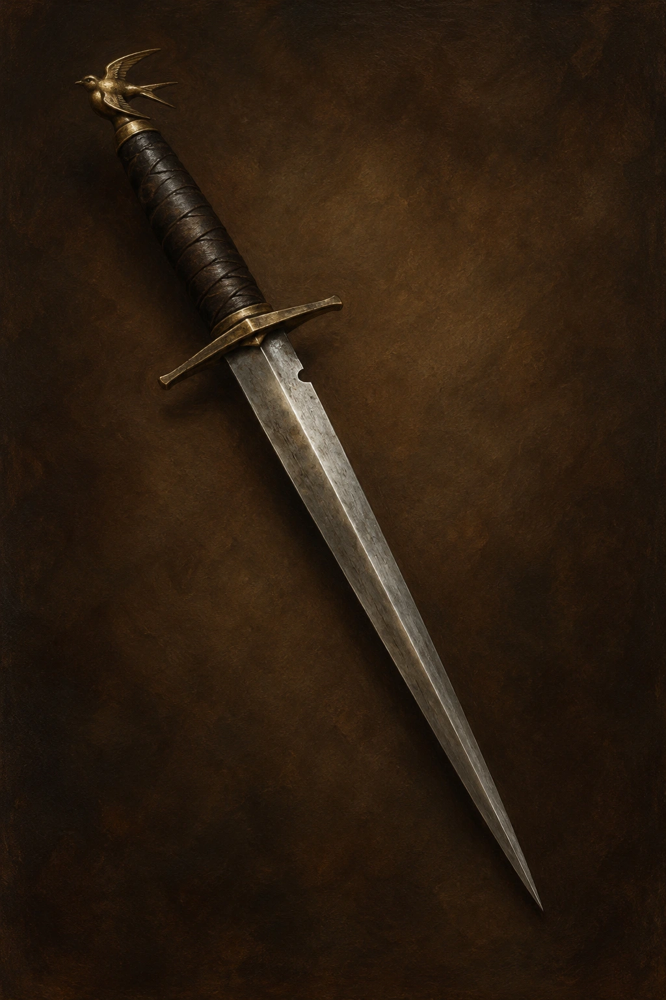
Hançer · hafif, finesse; 1d4 delici; fırlatma 20/60 ft
Normal hançer kuralları; saldırı ve hasar bonusu yok. Yetkinlik otomatik verilmez.
Üzerinde taşınırken, elindeki bu bıçakla sahipsiz ve büyüsüz, en fazla 2 cm kalınlıkta bir ipi bir eylemde kesebilirsin. Bir yaratığın giydiği/taşıdığı bağı otomatik kesmez.
15 altın
Denge Çeliği
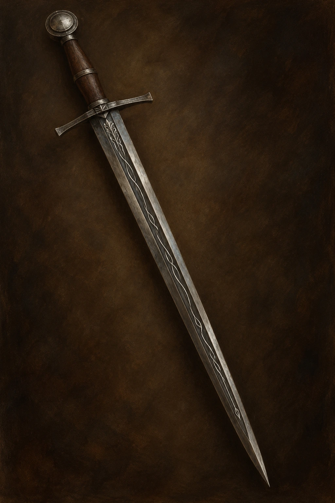
Kısa kılıç · hafif, finesse; 1d6 delici
Normal kısa kılıç; +1 saldırı/hasar silahı değildir.
Bu kılıçla sahipsiz bir nesneye verdiğin hasar 1 artar. Yaratıklara, taşınan donanıma veya büyülü nesnelere ek hasar yoktur.
25 altın
Sakin Kiriş
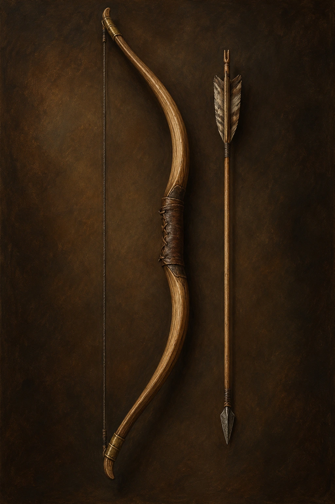
Kısa yay · iki elli, mühimmat; 1d6 delici; 80/320 ft
Normal kısa yay. Çizimdeki ok sıradan tanıtım oku; özel ok ödülünü ayrıca vermez.
Çatışma başlarken elinde bu yay varsa inisiyatif sonucuna +1. Sonradan çekmek sonucu değiştirmez; saldırı isabetine bonus vermez.
35 altın
İz Boyası Okları
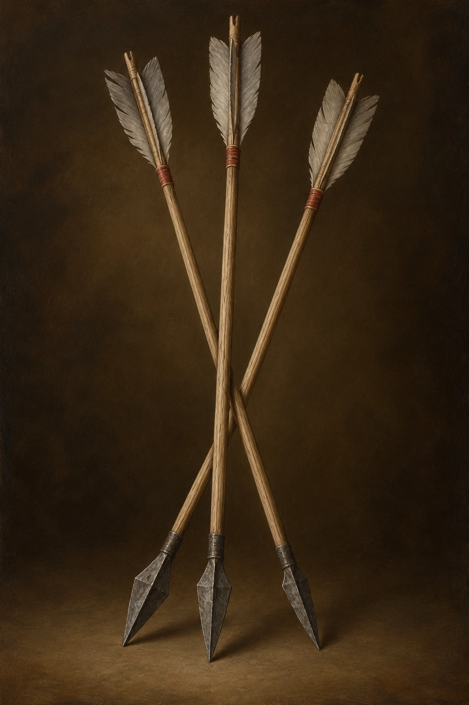
Üç özel ok · uygun yayla normal mühimmat hasarı
Oklar 1d6 ek hasar vermez; kullanılan yayın hasarı geçerlidir. Bir yaratık üzerindeki iz görünmezliği bozmaz.
İsabet ettiği yüzeyde bir saat kalan kırmızı bir iz bırakır. Atış bittikten sonra erişilebilir ve kırılmamış oklar 1 dakika aramayla geri alınabilir; ulaşılamayan ok geri dönmez.
Üçlü demet 12 altın
İs Tülü
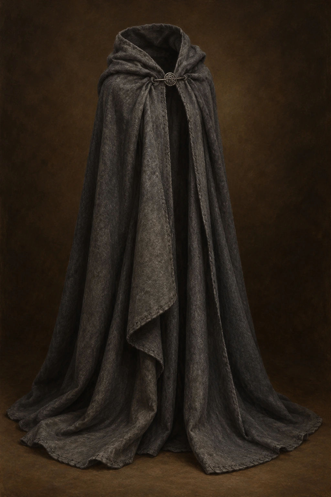
Hafif büyülü pelerin · Aruzahr özel eşya kuralı
Zırh, direnç veya görünmezlik vermez. Uyumlanma istemez; aynı eşyanın kopyaları birikmez.
Loş ışıkta veya karanlıkta yaptığın Çeviklik (Gizlilik) kontrolüne +1. Saklanmak için olağan koşullar yine gerekir; açıkta görünmez olmazsın.
40 altın
Soluköz çekirdeği
Nadir mineral · tek örnek; Aruzahr özel dünya/oyun kuralı
Ham hâli 60 altın. Marhalden loncasında 50 altın ve bir gün işçilikle bir ritüel çekirdeğine çevrilir; hazırlanmış hâlinin malzeme değeri 300 altındır. Bu fiyatlar küçük örneğe aittir; seri üretim yoktur.
Hazırlanmış çekirdek, yalnız Canlandırma (Revivify) büyüsünün 300 altınlık elmas bileşeni yerine bir kez kullanılabilir ve tüketilir. Büyüyü kendi başına yapmaz; yetkili büyücü, büyü yuvası, ölümden sonra en fazla 1 dakika ve diğer bütün büyü sınırları gerekir. Günler önce öleni döndürmez. Yüksek seviye diriltme malzemesi yerine geçmez.
Ham 60 altın · işlenmiş ritüel malzemesi 300 altın
Yıpranmış Kılıç
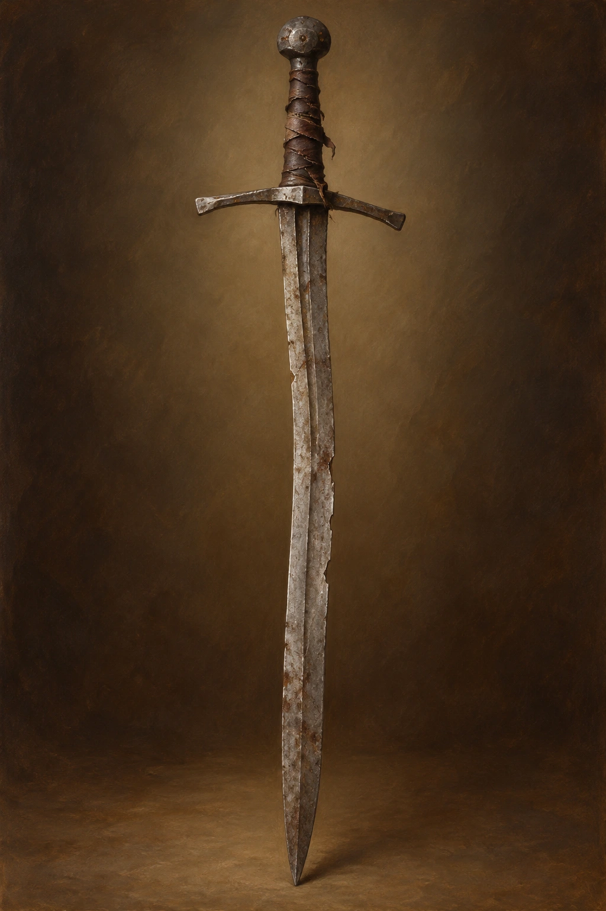
Kötü durumdaki kılıç · sahte hazine sandığının yemi
Bıçağı eğri ve kabzası gevşek; gözle inceleyen herkes fark eder. Dövüşte kullanılırsa DM onayıyla doğaçlama silah, 1d4 uygun fiziksel hasar; sıradan onarımla gerçek ödül kılıcına dönüşmez.
Büyü veya lanet taşımaz. Oyuncuya iyi kılıç diye verip ilk darbede habersizce kırma; kusurunu kullanmadan önce anlat.
Hurda olarak 2 gümüş
Süslü Göğüslük
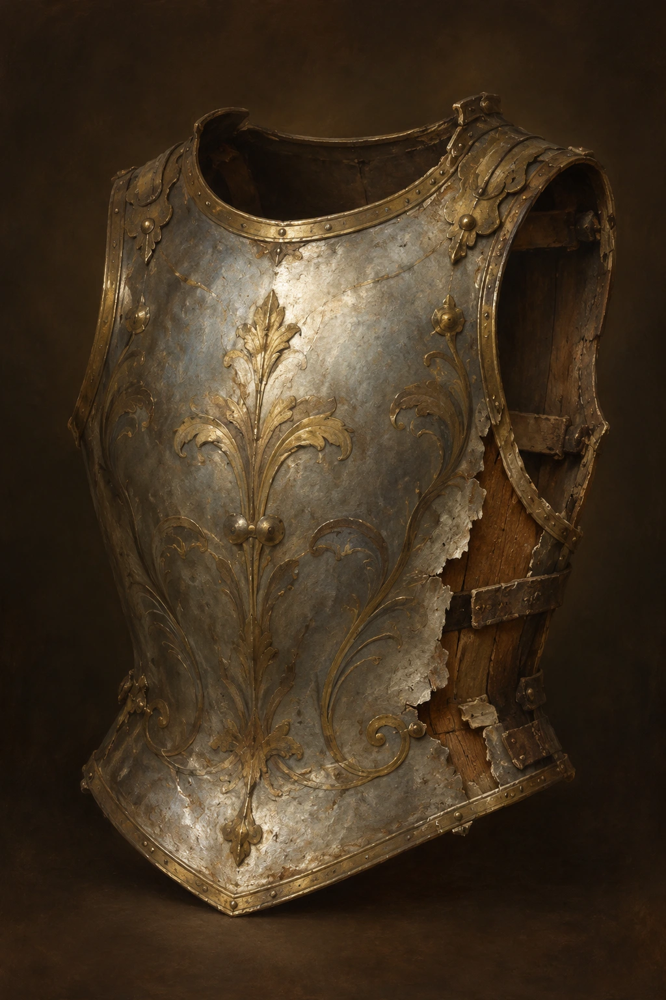
Sahte zırh · ince teneke kaplı ahşap ve kumaş
Savaş zırhı değildir; zırhsız olağan hesabın korunur, kendi başına Zırh bonusu vermez. Üzerine gerçek zırh giyilmesi veya bir sınıfın zırhsız savunması DM ile normal kurallara göre ele alınır.
Darbeye uygun değil: arkası ahşap, bağları yapıştırmalı. İnceleyene kusuru zarsız göster. Lanet veya gizli kalıcı ceza yok.
Dekor olarak 1 altın
Haritalar
Numaralı harita DM içindir; oyunculara çözümsüz sürümü göster.
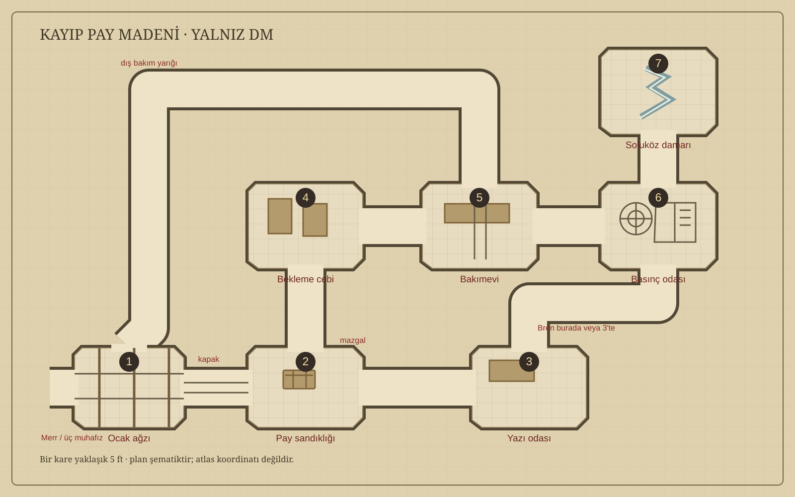